February Papers: Learning to Scale
Welcome to Papers of the Month! This time around, our monthly selection of ML papers revolves around the central theme of scale – and learning how to scale efficiently. Scaling-laws for LLMs, multi-scale quantisation training and scaling test-time compute: it's a rich buffet!
The first paper, Distillation Scaling Laws, presents a thorough study of distillation for Language Models, with the aim of estimating how student performance scales as a function of model size and amount of distillation data used -- offering very useful insights, in an era where distillation pre-training of LLMs is becoming more and more widespread to improve "capability per watt".
The problem of computational efficiency and cost reduction is also at the heart of Matryoshka Quantisation, DeepMind's solution for training a quantised model that can then be easily served at different lower numerical precisions, by leveraging the nested structure of integer data types. And if you are a quantisation geek like we are, make sure to also read our summary of ParetoQ, a new unified framework to investigate the scaling laws that govern the trade-off between quantised model size and accuracy in extremely low-bit regimes.
Finally, we jump from training scaling laws to scaling up test-time compute, with a paper that introduces a recurrent block in LLMs at test-time to allow the model to perform iterative reasoning in latent space, without verbalizing its intermediate thoughts, to improve its performance.
We hope you enjoy these month's papers as much as we did! If you have thoughts or questions, please reach out to us at @GCResearchTeam.
We hope you enjoy this month's papers as much as we did! If you have thoughts or questions, please reach out to us at @GCResearchTeam.
Distillation Scaling Laws
The key idea
When should you distil a small model from a larger one? Is compute better used to train a small model from scratch? The authors demonstrate that distillation is a better use of compute if a teacher model can be reused multiple times (e.g., for distilling many models, or for long term inference deployment) AND student compute budget is sufficiently limited.
Background
Chasing ever more capable language models by parameter scaling is a double edged sword as the cost of compute-optimal training and deployment of models scales quadratically with parameter count. When accounting for inference costs, deep learning practitioners often choose to pre-train a smaller model for longer, although this produces diminishing capability returns in the limit of large datasets.
A well-known alternative is to attempt to distil the capabilities of a larger "teacher" model into a smaller "student" model. A standard technique for doing so is to minimise the KL-divergence between the teacher and student predicted token distributions. Despite being a well known technique, a compute-efficient distillation strategy has not been characterised yet. This is possibly due to some counter-intuitive relationships in capabilities of teacher and student models. One such relationship is that highly capable teacher models can distil worse student models compared to weaker teachers, a phenomenon known as the "capacity gap", depicted in the following figure (where \(M = D/N\) is the tokens-per-parameter ratio)
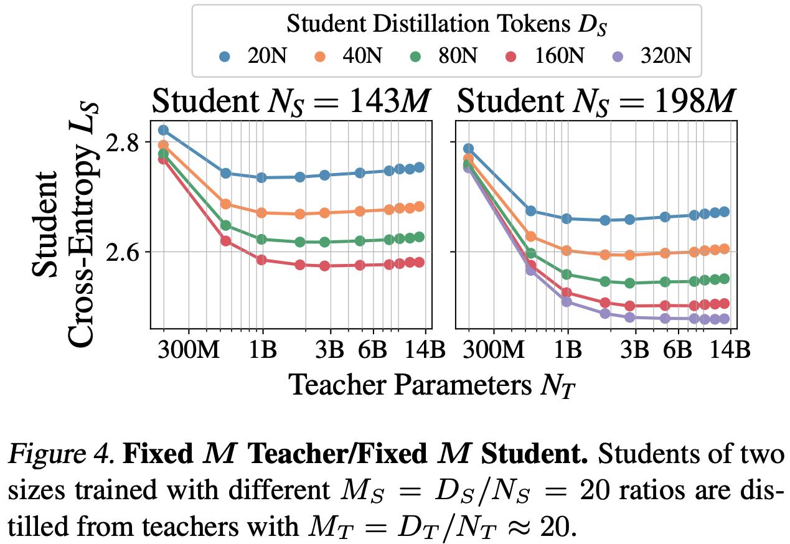
As such, the authors propose a scaling law for distillation that accounts for the capacity gap. They use this scaling law to analyse and derive an optimal distillation strategy under different assumed use cases for teacher models with different student training budgets.
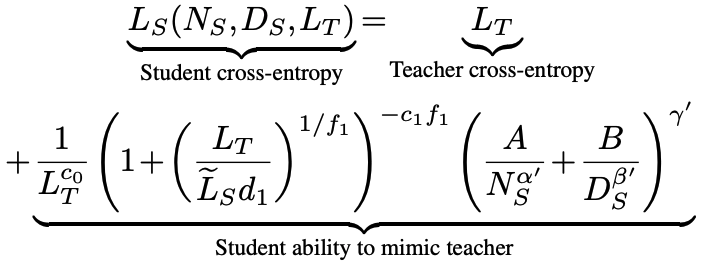
Their method
Given the dependence of the authors' scaling law on teacher parameter count \(N_T\), teacher training tokens \(D_T\), student parameter count \(N_S\) and student training tokens \(D_S\), the authors design two experiments to estimate parameters of their scaling law by isolating the contribution of teacher scaling and student scaling.
First they fix the ratio between teacher parameters and training tokens (\(D_T\)/\(N_T\) = 20) according to Chinchilla-optimal pre-training, then vary student parameters and training tokens for a given set of compute budgets.
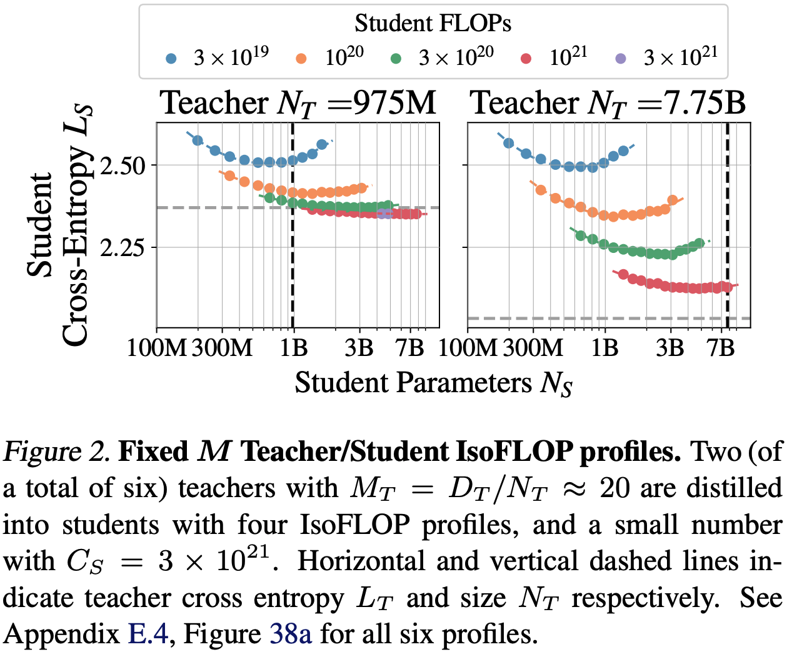
The second set of experiments do the reverse: fix the ratio of student parameters and tokens (examining many ratios >= 20) and vary teacher parameters and training tokens for a given set of compute budgets.
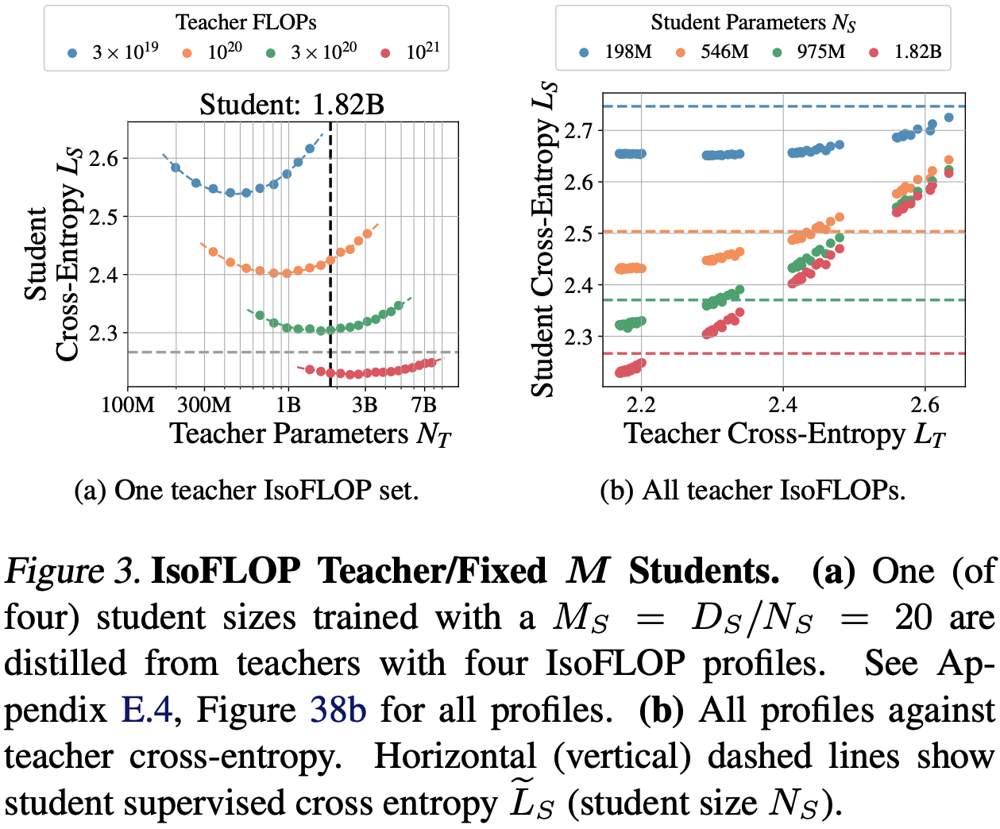
Results
The authors model the total compute cost of distillation and examine the optimal distillation strategy under different assumptions about the relative costs of teacher training and inference using their derived scaling law.
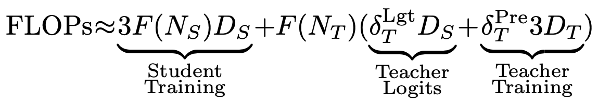
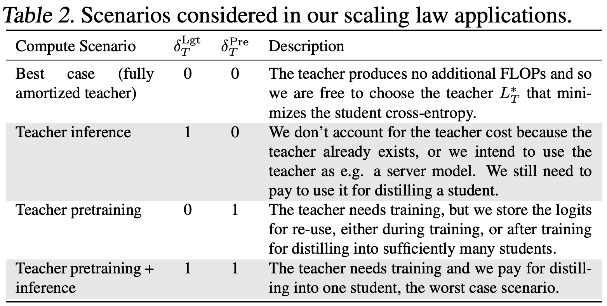
First, when there is sufficient data or compute available for training a student, pre-training outperforms distillation. However, as student models get larger, the crossover point where student pre-training becomes preferable requires increasingly more compute. This finding holds only when the cost of pre-training the teacher model can be amortised. Second, when pre-training teacher models can not be amortised, pre-training is always preferable to distillation.
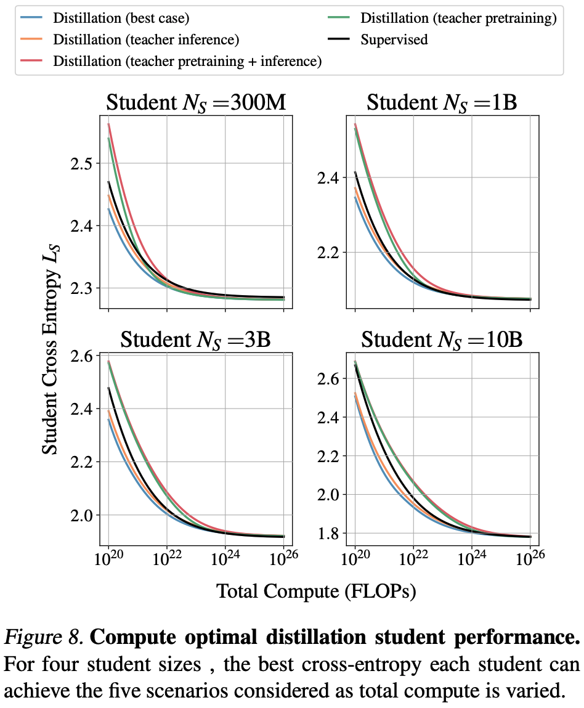
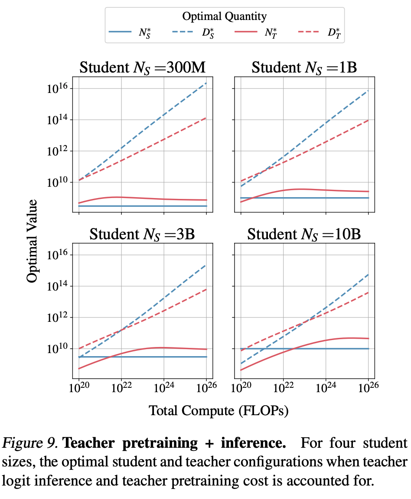
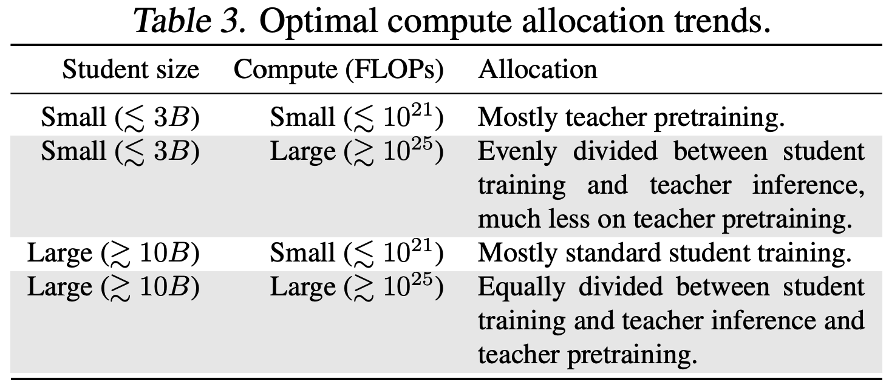
Takeaways
This is a useful reference for designing recipes that produce efficient model families. It is clear that distillation can be useful under compute-constrained settings, but still requires pre-training highly capable large models where we expect to get a clear return in pre-training investment. This somewhat begs the question of how to incentivise pre-training of large models for the model distilleries of the world to benefit from it! The third-axis of compute-optimal test-time scaling muddies the waters even further. It will be important to understand to what extent small distilled models benefit from additional inference compute through chain-of-thought/retrieval.
Matryoshka Quantization
The key idea
The authors showcase a method for training a single quantised model (from a pre-trained checkpoint) that can be used at different precision levels. They achieve this by simultaneously training the model to work at int8, int4, and int2 precisions, by optimising (at the same time) the eight, four, and two most significant bits of the integer representation, respectively. They show that this approach can be used in conjunction with learning-based quantisation methods, leading to minimal degradation at 8-bit and 4-bit precision levels (compared to optimising for a single precision level), and significantly improving the int2 baseline.
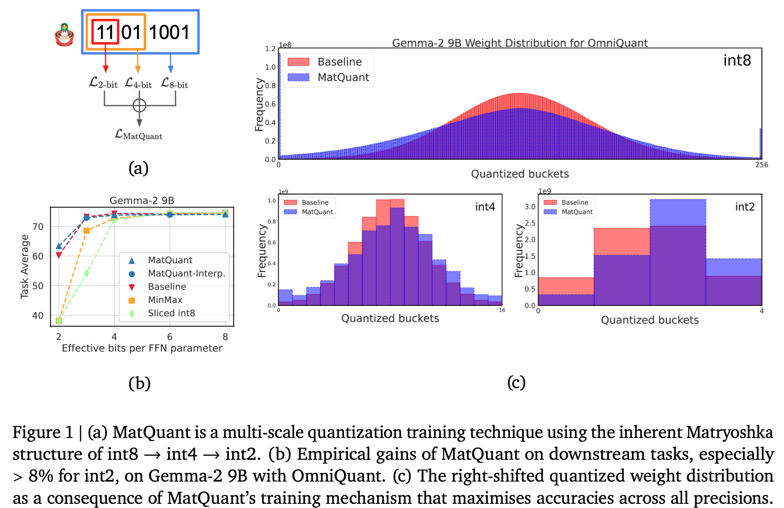
Background
Quantisation methods are broadly classified into two categories: learning-free and learning-based. Learning-free methods independently quantise the model's layers by minimising each layer's output error on a small calibration dataset, and generally do not involve backpropagation. Due to this, they are computationally cheaper, but tend to perform worse at very low-bit quantisation. Learning-based methods tend to perform better at low-bit precision, at the cost of the more computationally expensive learning through backpropagation.
The authors focus on two gradient descent-based methods that they show can be used with their Matryoshka Quantisation (MatQuant) approach: quantisation-aware training (QAT) and OmniQuant.
Quantisation-Aware Training (QAT)
QAT learns the quantised weights by minimising the end-to-end cross-entropy loss through gradient descent. The loss can be defined either in terms of the next-token prediction on a training dataset, or minimising the output differences between the original and the quantised models.
As the parameter quantisation function is non-differentiable, training is usually conducted by applying a straight-through estimator for the quantised parameters, i.e., the quantisation function is regarded as an identity function during the backwards pass calculation.
OmniQuant
Like the "learning-free" methods, OmniQuant finds the quantised weights by minimising the output difference (between the original and the quantised model) of each layer independently; however, this is done by introducing additional scaling and shifting parameters that are optimised through backpropagation. As such, it is a computationally cheaper approach compared to QAT, as it only optimises over these additional parameters.
Their method
Quantisation methods discussed previously optimise a model at a single predefined precision. On the other hand, the proposed technique, MatQuant leads to an integer-quantised model, that can be used at different precision levels during inference. This is done by adding individual loss functions for each of the 8/4/2 most-significant bits of the integer representation, which can be used in conjunction with the standard learning-based methods. To obtain an \(r\)-bit representation from the full \(c\)-bit one, the numbers are first right-shifted by \(c-r\) bits, followed by a left-shift of the same order (with appropriate rounding). The individual-bit losses can then be summed up with additional scaling factors controlling the relative magnitude of each term in the loss.
This scheme changes the obtained quantised weight distribution compared to the baseline techniques: in Figure 1c, the weights tend to have larger magnitudes.
Results
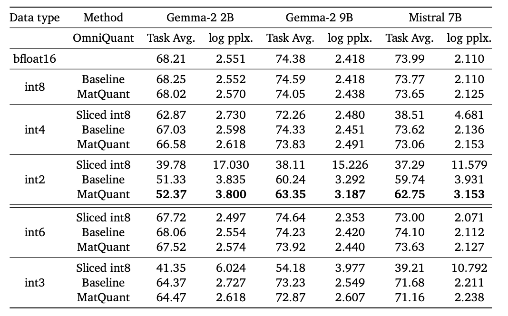
The authors test their method using both OmniQuant and QAT approaches, optimising for 8, 4, and 2-bit integer precisions; the baseline numbers are the two methods used on a single precision level. The methods were tested using Gemma and Mistral models, on a variety of downstream tasks.
Main observations:
* On both QAT and OmniQuant, their method experiences some degradation at int8 and int4 precisions, but improves the baseline on int2.
* Although training was explicitly conducted using 8/4/2-bit precisions, int3 and int6 show similar performance compared to their baselines (that are trained explicitly at these precisions).
* After training, different precision can be applied to different layers: somewhat surprisingly, the authors find that keeping the middle layers in higher precision improves the trade-off. Figure 2 shows the best mix-and-match results for Gemma-2 9B model.
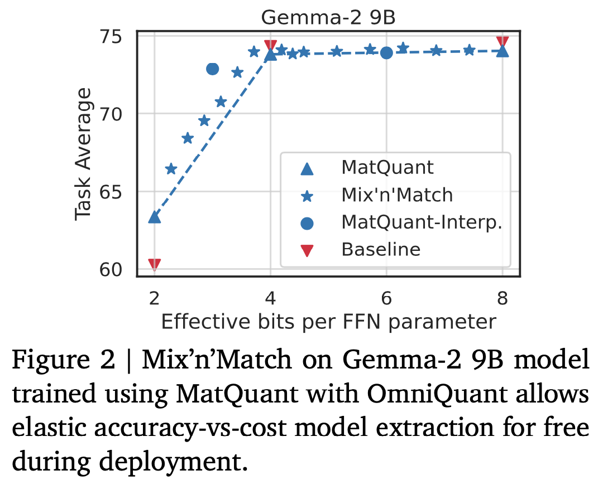
Takeaways
Overall, the authors showcase a neat approach to optimising a flexible-precision integer model using a single training setup – this approach is however limited to integer types, as floating point numbers do not have the "nested" structure that allows for the trivial bit slicing.
ParetoQ: Scaling Laws in Extremely Low-bit LLM Quantisation
The key idea
Quantisation is a key ingredient for efficient and cheap Large Language Model (LLM) servicing. As numerous quantisation recipes have been published over the last couple of years, researchers and practitioners have felt a growing need for an experimental setting comparing all techniques. ParetoQ introduces the first unified framework for comparing different bit-width quantisation approaches (1-bit, 1.58-bit, 2-bit, 3-bit, and 4-bit) for LLMs, with a comprehensive analysis considering five key dimensions: model parameters, token count, bit precision, training scheme and quantisation function. ParetoQ reveals a critical learning transition between 2-bit and 3-bit quantisation, where models quantized to 3-bit and above remain close to their full-precision pre-trained distributions, while lower-bit models require more substantial representation changes.
Background
Quantisation is crucial for deploying LLMs efficiently, as it reduces memory requirements and computational costs. Previous research has yielded contradictory conclusions about optimal bit-width – some arguing for 4-bit, others for 1.58-bit quantisation – and training setup (from Quantisation-Aware Training from scratch to simple Post-Training Quantisation). These inconsistencies emerge because prior studies have not systematically compared different bit-widths with the same training procedures and quantisation functions.
Method
ParetoQ introduces several methodological improvements in Quantisation-Aware Training (QAT), establishing new guidelines:
-
Optimal training budget allocation: the authors found that allocating ~90% of the training tokens to full-precision pre-training and ~10% to quantisation-aware fine-tuning achieves the best results across bit-widths. Additionally, lower bit quantisation (1-bit, 1.58-bit, 2-bit) requires more fine-tuning tokens and exhibits "reconstruction" behaviour (i.e., the model needs to form new semantic representations to maintain performance), while higher bit quantisation (3-bit, 4-bit) reaches saturation faster and shows "compensation" behaviour (i.e. remaining close to their pre-trained distribution).
-
Bit-specific quantisation functions: different bit-widths require dedicated quantisation approaches. The researchers developed Stretched Elastic Quant (SEQ) for 1.58-bit and 2-bit quantisation, for a better balance of output levels while maintaining an even quantisation of the full-precision weight span. For 3-bit and 4-bit quantisation, the paper shows that including zero in the quantisation grid is always beneficial.
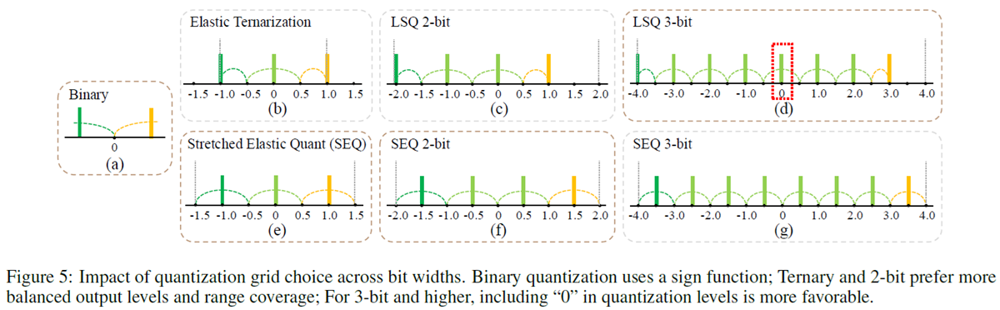
- In all bit-width quantisation settings, it is shown that a learnable range outperforms statistics-based methods (e.g., min-max, quantiles, etc.) due to its flexibility in optimizing range parameters with respect to the final loss. The gradient of the scale parameter can be estimated on the backward pass using a straight-through estimator.
Results
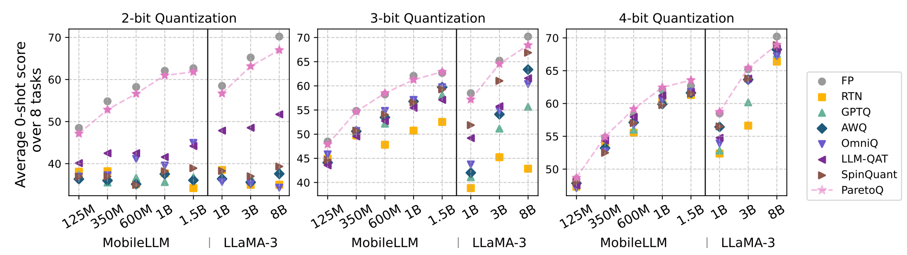
The ParetoQ framework achieved state-of-the-art results across all bit-width settings, outperforming the existing literature on specific bit-widths. As presented in the comparison table, it presents a major step forward in terms of accuracy for 2-bit and 3-bit quantisation. The pareto optimal curve is showing the 2-bit and 3-bit quantisation is now an accurate alternative to the more common 4-bit quantisation solution, achieving similar accuracy with improved memory usage. 2-bit quantisation is a particularly promising solution considering hardware constraints for efficient memory packing/unpacking and dot-product implementation.
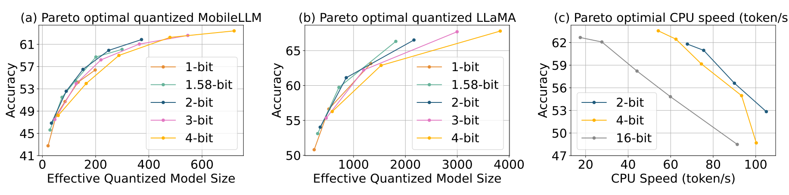
Scaling up Test-Time Compute with Latent Reasoning: A Recurrent Depth Approach
The key idea
This work explores the idea of having a recurrent block within a model at inference time, so that it can vary the amount of compute spent generating each token, without requiring decoding back into language space. This can capture types of reasoning which are difficult to express in natural language, and can therefore improve its reasoning capabilities.
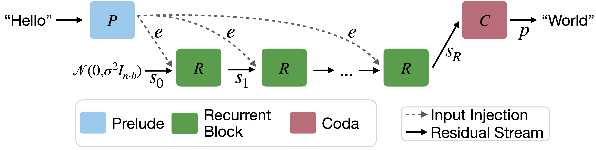
Background
Test-time compute allows models to express intermediate steps or calculations when solving complex problems, making it effective for tasks that require extensive reasoning. However, by virtue of autoregressive generation, these intermediate "thoughts" must be projected down into discretised tokens.
This work argues that models could be more capable if they are not constrained to think in language space, but rather their native (and continuous) latent space.
Their method
The authors' solution is to introduce a recurrent unit to allow for additional test-time compute. This recurrent unit can scale indefinitely, and shares many parallels with RNNs and diffusion models.
The architecture is comprised of a prelude (which embeds the input data into latent space), a recurrent unit which modifies the latent state and can be repeated a variable number of times, and a coda, which decodes the latent space back into a natural language token, and includes the prediction head of the model. Each block is structured as a transformer-decoder module.
In order to train this architecture with a variable number of iterations through the recurrent unit, the authors randomly sample the number of iterations for each input sequence. In order to keep the computation and memory low during training, they only backpropagate through the final \(k\) iterations of the recurrent unit (given that they inject the output of the prelude into each iteration of the recurrent unit, gradient updates also propagate through the prelude).
Results
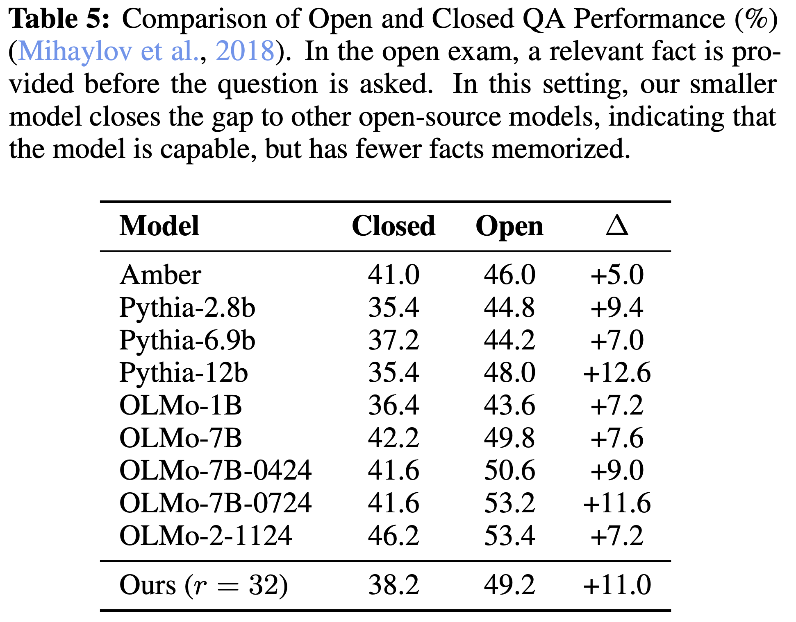
The authors found that their method outperforms Pythia models and is comparable in performance to first-generation OLMo models (although falls behind later OLMo models) with just 3.5 billion parameters. As a proof-of-concept and the first recurrent-depth LLM to be trained at this scale, these results are promising and indicate more work should be carried out in this space.
In addition to predetermining the number of iterations the model should take through the recurrent unit, it's also possible to have adaptive compute in a zero-shot manner at test-time. They achieve this by considering the KL-divergence between two successive passes of the recurrent-block. If it falls below a certain threshold, then they can stop iterating, sample the output token, and move onto the next token.
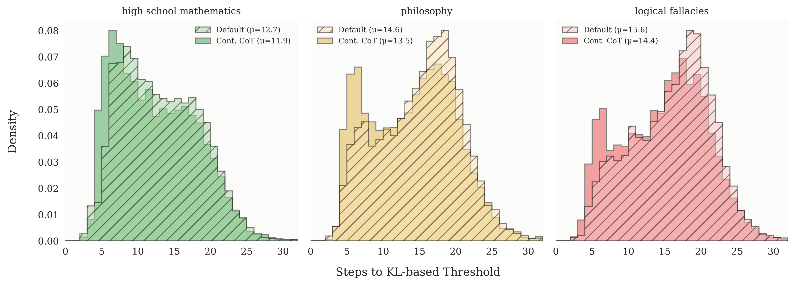
Takeaways
Although there is other work looking at latent reasoning for LLMs (Coconut, for example), this is still a relatively early piece of work in this space, but initial results are promising. It will be exciting to follow how this space continues to develop in the weeks and months ahead, and we expect to see state-of-the-art reasoning models transition their reasoning from language space toward the latent space.